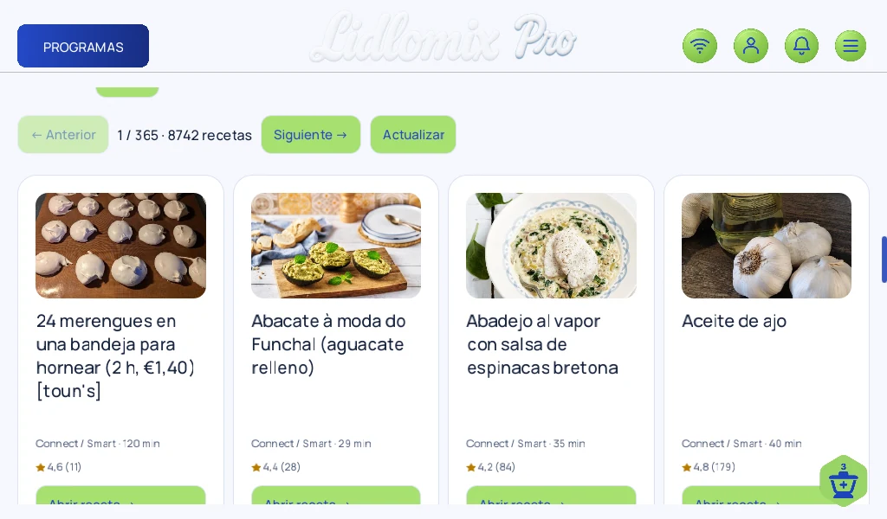

01 / Comienzos ·
Recetas del cuaderno familiar
Cuando mi abuela decía «echa un puñado», sabía exactamente cuánto hacía falta. Y siempre quedaba delicioso. Esas recetas pasaban de generación en generación y las páginas conservaban las huellas de tantos años en la cocina. Yo tenía un cuaderno así, con páginas manchadas y notas escritas a mano. Al hojearlo, pensé que sería estupendo fotografiar una página y preparar la receta en mi Lidlomix.
Una foto de la página
Por entonces, los modelos leían la escritura manuscrita polaca con resultados desiguales. Un trazo que para mí era evidente podía parecerle a ChatGPT una cifra completamente distinta. Le daba ejemplos, corregía sus errores y comprobaba si podía transcribir toda la página y señalar los pasajes que no había entendido con seguridad.
De esas pruebas surgió el inicio de conversación «Recetas de la abuela» en Lidlomix GPT. Bastaba con abrirlo, adjuntar una foto y escribir «Adapta la receta». El asistente leía el texto de la imagen y mostraba lo que había encontrado. En ese momento se podía corregir un ingrediente, una medida o un orden de pasos mal leído. Una vez confirmada la transcripción, preparaba la versión para Monsieur Cuisine.
¿Cuánto pesa un puñado?
«Un vasito de nata», «un puñado de nueces», «la harina que admita la masa». Eran instrucciones para alguien que ya conocía esa manera de cocinar. Para pasarlas al robot necesitaba cantidades que se pudieran pesar y pasos claros. El asistente convertía las medidas según cada ingrediente, ordenaba los pasos y elegía los programas, los accesorios y los ajustes de tiempo, temperatura y velocidad.
Podía guardar la receta adaptada en Word y llevarla a la cocina. Sin embargo, en el programa manual seguía ajustando el tiempo, la velocidad y la temperatura una y otra vez. La página ya se leía bien y la receta estaba adaptada. Me faltaba poder abrirla en el robot y seguir los pasos con los ajustes preparados.
Receta en la pantalla del robot
En la aplicación de fábrica no encontré una forma de recibir la receta terminada desde el asistente. También quería conectar una herramienta local mediante MCP, el protocolo que permite al asistente proponer una receta a la aplicación para su aprobación. Así que empecé a escribir Lidlomix Pro desde cero en Rust. Las pantallas originales me ayudaron a distribuir los controles en lugares familiares. Escribí por mi cuenta el catálogo, la búsqueda y la guía paso a paso.
La memoria del Connect también importaba. La aplicación guarda las recetas en una base de datos SQLite local y carga los resultados que necesita cada pantalla, sin cargar todo el catálogo en la memoria RAM. Una receta preparada en el chat se puede guardar en JSON y enviar desde el teléfono mediante Wi-Fi. En el robot se abre en Borradores de recetas, donde se puede revisar y aprobar. Al guardarla, queda en el dispositivo. El mismo archivo puede incluir una foto del plato de hasta 500 kB.
Hoy puedo volver al cuaderno, fotografiar una página y pasar de un «puñado de nueces» escrito a mano a una receta en la pantalla del Connect. En cada paso veo qué añadir y qué programa usar. Los ajustes ya están listos y pulso Iniciar cuando todo está en el vaso.
Conoce al asistente de Lidlomix en ChatGPT
